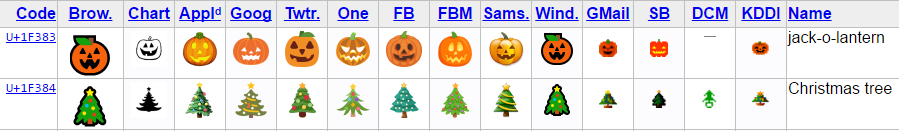

Comment indexer des Emoji avec Elasticsearch
Ou chercher 🍕 pour trouver des pizzas !
@damienalexandre

PHP, Elasticsearch, Symfony, Emoji

Conseil, réalisation, audit, expertise et formation
…Poney, Guinness et gif animé.
Qu'est-ce qu'un emoji ?
- Depuis l'invention
de l'écrituredu SMS, nous utilisons des emoticons pour transmettre des émotions ! - Abraham Lincoln en 1862 : "(applause and laughter ;)"
- Scott Fahlman est le premier, en 1982 avec les emoticons :-) et :-(
:-) :D :-( ^_^ ;-) <3
Qu'est-ce qu'un emoji ?
En 1998, un opérateur Japonais i-mode lance une collection de 172 pictogrammes de 12x12 pixels

Le MoMA vient d'acheter cette collection
Qu'est-ce qu'un emoji ?
- Chaque opérateur avait son propre set propriétaire - la guerre de la concurrence pour avoir les emoji les plus cool 😎
- La transmission était sur 2 octets (en utilisant un range privé Unicode)
- Si vous étiez chez NTT DoCoMo, vous ne pouviez pas voir les emoji envoyés par votre collègue chez SoftBank Mobile 😧
- Avec le temps, les opérateurs ont ajouté un mapping...
Qu'est-ce qu'un emoji ?
- Standardisation dans Unicode version 6.0 en Octobre 2010
- 855 emoji spécifié, documenté et encodé par le Consortium Unicode
- Avec mapping pour les emoji Japonais existants
- Tour de Tokyo 🗼 mais pas Tour Eiffel 😒
🍢 🍤 🍥 🏯 👘 🎌 🗻 🎏
Qu'est-ce qu'un emoji ?
- Support complet dans l'iPhone en 2011 📱
- Tout le monde a suivi et nous pouvons maintenant transmettre 🍕 depuis un téléphone Android en France vers un téléphone Chinois sans aucun problème !
- caniemoji.com
Les Emoji dans Unicode
- 🍕 est le code point U+1F355
- 🏳 est U+1F3F3
- 🌈 est U+1F308
Les Emoji dans Unicode
Ces emoji se comportent et se manipulent comme du texte. C'est votre système d'exploitation qui est capable de les afficher en image.

La composition
-
ZWJ Sequence
- 🏳 U+1F3F3 U+200D 🌈 U+1F308
- Rainbow FLAG !

Les modifiers
-
Modifiers Fitzpatrick
- 🤘 U+1F918 et 🏽 U+1F3FD
- 🤘🏽
- Ne doit pas altérer la recherche
Sélecteur de variation
-
Variations
- 🏳️ U+FE0E pour forcer la version texte
- 🏳 U+FE0F pour forcer l'image
Drapeaux
-
Pour chaque pays !
- 🇨 U+1F1E8 et 🇦 U+1F1E6 donne 🇨🇦
- 🇫🇷 🇦🇪 🇸🇪
Les emoji et le texte
La spécification comporte maintenant :
- Des métiers 👮 ;
- Des émotions 😍 ;
- De la nourriture 🍕 ;
- Des animaux 🐘 ;
- Des sports 🚴 ;
- Des objets 💐 📋 🔦…
L'utilisation des emoji
Vous n'y échapperez pas !
- Word of the Year du Oxford English Dictionary 2015 : 😂
- World Emoji Day le 17 Juillet 🎉
- Emojimovie: Express Yourself, au cinéma en 2017 🎥
- Supporté partout ! Saisie super simple et claviers dédiés sur mobile ⌨
- Emojipedia.org fait 14 millions de page vue par mois
Oui, vos utilisateurs vont saisir 🍕 dans votre moteur de recherche !
WTF!
Conclusion : le père noël n'existe pas 😨
Ou alors la recherche de Twitter est NULLE
🎅 🎅 🎅
Faire mieux que Twitter
- Unicode spécifie comment faire de la recherche
- Chaque emoji doit être indexé avec ses annotations, et cela dans toutes les langues cibles :
- Anglais : 🎅 => 🎅, celebration, christmas, santa
- Français : 🎅 => 🎅, père, noël
- Donc rechercher "santa" remonte les document avec 🎅 et inversement.
L'analyse Elasticsearch
- char_filter : « Meetup ELASTICSEARCH ! »
- tokenizer : [Meetup] [ELASTICSEARCH]
- token_filter : [meetup] [elasticsearch]
🏷 Les synonymes peuvent être ajoutés via un token_filter
Ajout des synonymes
"english_emoji": {
"type": "synonym",
"synonyms_path": "analysis/emoji-synonyms-en.txt"
}
🍺 => 🍺, bar, beer, drink, mug
🍻 => 🍻, bar, beer, clink, drink, mug
🍽 => 🍽, cooking, fork, knife, plate
🍴 => 🍴, cooking, fork, knife
🍳 => 🍳, egg, frying, pan
Ajout des synonymes
- Le CLDR fourni les annotations dans toutes les langues
- Je fournis juste les fichiers de synonymes déjà prêt :
Pas de token 🎅 ?
- Le standard tokenizer est basé sur "Unicode Text Segmentation" version 17, publié en 2010, sans support des Emoji
- Un emoji est donc considéré comme un caractère à ignorer au même titre que la ponctuation
😖
/_analyze?tokenizer=standard&text=I love 🍕
{
"tokens" : [
{
"token" : "I",
"position" : 0
},
{
"token" : "love",
"position" : 1
}
]
}
Mes synonymes ne seront jamais ajoutés 😢
Le whitespace tokenizer
-
☑ Avantages
- On conserve les Emoji ! 😎
-
❌ Inconvénients
- Plus bête que le standard tokenizer
- Laisse la ponctuation
- Ne met pas en lowercase
/_analyze?tokenizer=whitespace&text=I love 🍕
{
"tokens" : [
{
"token" : "I"
},
{
"token" : "love"
},
{
"token" : "\uD83C\uDF55"
}
]
}
(Vous avez remarqué les surrogate pair UTF-16 🤓 ?)
On ajoute des token_filter
"punctuation_filter": {
"type": "pattern_replace",
"pattern": "\\p{Punct}",
"replace": ""
},
"remove_empty_filter": {
"type": "length",
"min": 1
}Nécessaire pour enlever la ponctuation et les éventuels tokens vides.
!"#$%&'()*+,-./:;<=>?@[]^_`{|}~
Ne pas oublier les copains
- \uFE0E: VARIATION SELECTOR-15 (force text representation)
- \uFE0F: VARIATION SELECTOR-16 (force graphic representation)
- \uD83C\uDFFB: EMOJI MODIFIER FITZPATRICK TYPE-1–2 (skin tone)
- \uD83C\uDFFC: EMOJI MODIFIER FITZPATRICK TYPE-3 (skin tone)
- \uD83C\uDFFD: EMOJI MODIFIER FITZPATRICK TYPE-4 (skin tone)
- \uD83C\uDFFE: EMOJI MODIFIER FITZPATRICK TYPE-5 (skin tone)
- \uD83C\uDFFF: EMOJI MODIFIER FITZPATRICK TYPE-6 (skin tone)
- \u200D: ZERO WIDTH JOINER
Ajout des modifiers
"punctuation_filter": {
"type": "pattern_replace",
"pattern": "\\p{Punct}|\\uFE0E|\\uFE0F|\\uD83C\\uDFFB|\\uD83C\\uDFFC|\\uD83C\\uDFFD|\\uD83C\\uDFFE|\\uD83C\\uDFFF",
"replace": ""
}
Suppression du ZWJ via un char_filter
"zwj_char_filter": {
"type": "mapping",
"mappings": [
"\\u200D=>"
]
}
L'analyzer complet
"analyzer": {
"english_with_emoji": {
"char_filter": "zwj_char_filter", // ZWJ
"tokenizer": "whitespace", // Découpage
"filter": [
"lowercase", // Minuscules
"punctuation_filter", // Modifiers...
"remove_empty_filter", // Tokens vide
"english_emoji" // Synonymes !
]
}
}
Et ça marche !
GET /en-emoji/_analyze?analyzer=english_with_emoji
{
"text": "A 🍩︎ please."
}
["a", "🍩",︎ "dessert", "donut", "sweet", "please"]
Aller plus loin...
ICU, CLDR et Unicode avancent vite
- ICU supporte les Emoji depuis quelques versions
- ICU est disponible sous forme de plugin : analysis-icu
- Ce plugin est basé sur la version 54 d'ICU
- Dans Lucene, le ICU Tokenizer utilise la version 56.1
- Nous sommes actuellement à la version 58.1
- Le ICUTokenizer de Lucene marque quand même les Emoji comme des non mots
La dernière version d'ICU
- Avec ma version basée sur whitespace :
- 🏳 : Drapeau blanc
- 🌈 : Arc-en-ciel
- Avec une compréhension des séquences :
- : Drapeau Arc-en-ciel, LGBT, Gay pride
Plonger dans le code
Dans ICUTokenizer.java, status 0 = ignoré :
// find the next set of boundaries,
// skipping over non-tokens (rule status 0)
int end = breaker.next();
while (start != BreakIterator.DONE
&& breaker.getRuleStatus() == 0) {
start = end;
end = breaker.next();
}
Lucene utilise SVN 😱
Unicode aussi 😵
Le RuleStatus
!!chain;
$CR = [\p{Word_Break = CR}];
$LF = [\p{Word_Break = LF}];
$Newline = [\p{Word_Break = Newline} ];
$Extend = [\p{Word_Break = Extend}];
$ZWJ = [\p{Word_Break = ZWJ}];
$Regional_Indicator = [\p{Word_Break = Regional_Indicator}];
$Format = [\p{Word_Break = Format}];
$Katakana = [\p{Word_Break = Katakana}];
$Hebrew_Letter = [\p{Word_Break = Hebrew_Letter}];
$ALetter = [\p{Word_Break = ALetter}];
$Single_Quote = [\p{Word_Break = Single_Quote}];
$Double_Quote = [\p{Word_Break = Double_Quote}];
$MidNumLet = [\p{Word_Break = MidNumLet}];
$MidLetter = [\p{Word_Break = MidLetter}];
$MidNum = [\p{Word_Break = MidNum}];
$Numeric = [\p{Word_Break = Numeric}];
$ExtendNumLet = [\p{Word_Break = ExtendNumLet}];
$E_Base = [\p{Word_Break = EB}\U0001F3C2\U0001F3C7\U0001F3CC\U0001F46A-\U0001F46D\U0001F46F\U0001F574\U0001F6CC];
$E_Modifier = [\p{Word_Break = EM}];
$Extended_Pict = [\U0001F774-\U0001F77F\u2700-\u2701\u2703-\u2704\u270E\u2710-\u2711\u2765-\u2767\U0001F030-\U0001F093\U0001F094-\U0001F09F\U0001F10D-\U0001F10F\U0001F12F\U0001F16C-\U0001F16F\U0001F1AD-\U0001F1E5\U0001F203-\U0001F20F\U0001F23C-\U0001F23F\U0001F249-\U0001F24F\U0001F252-\U0001F2FF\U0001F7D5-\U0001F7FF\U0001F000-\U0001F003\U0001F005-\U0001F02B\U0001F02C-\U0001F02F\U0001F322-\U0001F323\U0001F394-\U0001F395\U0001F398\U0001F39C-\U0001F39D\U0001F3F1-\U0001F3F2\U0001F3F6\U0001F4FE\U0001F53E-\U0001F548\U0001F54F\U0001F568-\U0001F56E\U0001F571-\U0001F572\U0001F57B-\U0001F586\U0001F588-\U0001F589\U0001F58E-\U0001F58F\U0001F591-\U0001F594\U0001F597-\U0001F5A3\U0001F5A6-\U0001F5A7\U0001F5A9-\U0001F5B0\U0001F5B3-\U0001F5BB\U0001F5BD-\U0001F5C1\U0001F5C5-\U0001F5D0\U0001F5D4-\U0001F5DB\U0001F5DF-\U0001F5E0\U0001F5E2\U0001F5E4-\U0001F5E7\U0001F5E9-\U0001F5EE\U0001F5F0-\U0001F5F2\U0001F5F4-\U0001F5F9\u2605\u2607-\u260D\u260F-\u2610\u2612\u2616-\u2617\u2619-\u261C\u261E-\u261F\u2621\u2624-\u2625\u2627-\u2629\u262B-\u262D\u2630-\u2637\u263B-\u2647\u2654-\u265F\u2661-\u2662\u2664\u2667\u2669-\u267A\u267C-\u267E\u2680-\u2691\u2695\u2698\u269A\u269D-\u269F\u26A2-\u26A9\u26AC-\u26AF\u26B2-\u26BC\u26BF-\u26C3\u26C6-\u26C7\u26C9-\u26CD\u26D0\u26D2\u26D5-\u26E8\u26EB-\u26EF\u26F6\u26FB-\u26FC\u26FE-\u26FF\u2388\U0001FA00-\U0001FFFD\U0001F0A0-\U0001F0AE\U0001F0B1-\U0001F0BF\U0001F0C1-\U0001F0CF\U0001F0D1-\U0001F0F5\U0001F0AF-\U0001F0B0\U0001F0C0\U0001F0D0\U0001F0F6-\U0001F0FF\U0001F80C-\U0001F80F\U0001F848-\U0001F84F\U0001F85A-\U0001F85F\U0001F888-\U0001F88F\U0001F8AE-\U0001F8FF\U0001F900-\U0001F90F\U0001F91F\U0001F928-\U0001F92F\U0001F931-\U0001F932\U0001F93F\U0001F94C-\U0001F94F\U0001F95F-\U0001F97F\U0001F992-\U0001F9BF\U0001F9C1-\U0001F9FF\U0001F6C6-\U0001F6CA\U0001F6E6-\U0001F6E8\U0001F6EA\U0001F6F1-\U0001F6F2\U0001F6D3-\U0001F6DF\U0001F6ED-\U0001F6EF\U0001F6F7-\U0001F6FF];
$EBG = [\p{Word_Break = EBG}];
$EmojiNRK = [[\p{Emoji}] - [\p{Word_Break = Regional_Indicator}\u002a\u00230-9©®™〰〽]];
$Han = [:Han:];
$Hiragana = [:Hiragana:];
$Control = [\p{Grapheme_Cluster_Break = Control}];
$HangulSyllable = [\uac00-\ud7a3];
$ComplexContext = [:LineBreak = Complex_Context:];
$KanaKanji = [$Han $Hiragana $Katakana];
$dictionaryCJK = [$KanaKanji $HangulSyllable];
$dictionary = [$ComplexContext $dictionaryCJK];
$ALetterPlus = [$ALetter-$dictionaryCJK [$ComplexContext-$Extend-$Control]];
$KatakanaEx = $Katakana ($Extend | $Format | $ZWJ)*;
$Hebrew_LetterEx = $Hebrew_Letter ($Extend | $Format | $ZWJ)*;
$ALetterEx = $ALetterPlus ($Extend | $Format | $ZWJ)*;
$Single_QuoteEx = $Single_Quote ($Extend | $Format | $ZWJ)*;
$Double_QuoteEx = $Double_Quote ($Extend | $Format | $ZWJ)*;
$MidNumLetEx = $MidNumLet ($Extend | $Format | $ZWJ)*;
$MidLetterEx = $MidLetter ($Extend | $Format | $ZWJ)*;
$MidNumEx = $MidNum ($Extend | $Format | $ZWJ)*;
$NumericEx = $Numeric ($Extend | $Format | $ZWJ)*;
$ExtendNumLetEx = $ExtendNumLet ($Extend | $Format | $ZWJ)*;
$Regional_IndicatorEx = $Regional_Indicator ($Extend | $Format | $ZWJ)*;
$Ideographic = [\p{Ideographic}];
$HiraganaEx = $Hiragana ($Extend | $Format | $ZWJ)*;
$IdeographicEx = $Ideographic ($Extend | $Format | $ZWJ)*;
!!forward;
$CR $LF;
$ZWJ ($Extended_Pict | $EmojiNRK);
[^$CR $LF $Newline]? ($Extend | $Format | $ZWJ)+;
$NumericEx {100};
$ALetterEx {200};
$HangulSyllable {200};
$Hebrew_LetterEx{200};
$KatakanaEx {400};
$HiraganaEx {400};
$IdeographicEx {400};
$E_Base ($Extend | $Format | $ZWJ)*;
$E_Modifier ($Extend | $Format | $ZWJ)*;
$Extended_Pict ($Extend | $Format | $ZWJ)*;
($ALetterEx | $Hebrew_LetterEx) ($ALetterEx | $Hebrew_LetterEx) {200};
($ALetterEx | $Hebrew_LetterEx) ($MidLetterEx | $MidNumLetEx | $Single_QuoteEx) ($ALetterEx | $Hebrew_LetterEx) {200};
$Hebrew_LetterEx $Single_QuoteEx {200};
$Hebrew_LetterEx $Double_QuoteEx $Hebrew_LetterEx {200};
$NumericEx $NumericEx {100};
($ALetterEx | $Hebrew_LetterEx) $NumericEx {200};
$NumericEx ($ALetterEx | $Hebrew_LetterEx) {200};
$NumericEx ($MidNumEx | $MidNumLetEx | $Single_QuoteEx) $NumericEx {100};
$KatakanaEx $KatakanaEx {400};
$ALetterEx $ExtendNumLetEx {200};
$Hebrew_LetterEx $ExtendNumLetEx {200};
$NumericEx $ExtendNumLetEx {100};
$KatakanaEx $ExtendNumLetEx {400};
$ExtendNumLetEx $ExtendNumLetEx {200};
$ExtendNumLetEx $ALetterEx {200};
$ExtendNumLetEx $Hebrew_Letter {200};
$ExtendNumLetEx $NumericEx {100};
$ExtendNumLetEx $KatakanaEx {400};
($E_Base | $EBG) ($Format | $Extend | $ZWJ)* $E_Modifier;
^$Regional_IndicatorEx $Regional_IndicatorEx;
$HangulSyllable $HangulSyllable {200};
$KanaKanji $KanaKanji {400};
!!reverse;
$BackHebrew_LetterEx = ($Format | $Extend | $ZWJ)* $Hebrew_Letter;
$BackALetterEx = ($Format | $Extend | $ZWJ)* $ALetterPlus;
$BackSingle_QuoteEx = ($Format | $Extend | $ZWJ)* $Single_Quote;
$BackDouble_QuoteEx = ($Format | $Extend | $ZWJ)* $Double_Quote;
$BackMidNumLetEx = ($Format | $Extend | $ZWJ)* $MidNumLet;
$BackNumericEx = ($Format | $Extend | $ZWJ)* $Numeric;
$BackMidNumEx = ($Format | $Extend | $ZWJ)* $MidNum;
$BackMidLetterEx = ($Format | $Extend | $ZWJ)* $MidLetter;
$BackKatakanaEx = ($Format | $Extend | $ZWJ)* $Katakana;
$BackHiraganaEx = ($Format | $Extend | $ZWJ)* $Hiragana;
$BackExtendNumLetEx = ($Format | $Extend | $ZWJ)* $ExtendNumLet;
$BackRegional_IndicatorEx = ($Format | $Extend | $ZWJ)* $Regional_Indicator;
$LF $CR;
($Extended_Pict | $EmojiNRK) $ZWJ;
($Format | $Extend | $ZWJ)* [^$CR $LF $Newline]?;
($BackALetterEx | $BackHebrew_LetterEx) ($BackALetterEx | $BackHebrew_LetterEx);
($BackALetterEx | $BackHebrew_LetterEx) ($BackMidLetterEx | $BackMidNumLetEx | $BackSingle_QuoteEx) ($BackALetterEx | $BackHebrew_LetterEx);
$BackSingle_QuoteEx $BackHebrew_LetterEx;
$BackHebrew_LetterEx $BackDouble_QuoteEx $BackHebrew_LetterEx;
$BackNumericEx $BackNumericEx;
$BackNumericEx ($BackALetterEx | $BackHebrew_LetterEx);
($BackALetterEx | $BackHebrew_LetterEx) $BackNumericEx;
$BackNumericEx ($BackMidNumEx | $BackMidNumLetEx | $BackSingle_QuoteEx) $BackNumericEx;
$BackKatakanaEx $BackKatakanaEx;
$BackExtendNumLetEx ($BackALetterEx | $BackHebrew_LetterEx | $BackNumericEx | $BackKatakanaEx | $BackExtendNumLetEx);
($BackALetterEx | $BackHebrew_LetterEx | $BackNumericEx | $BackKatakanaEx) $BackExtendNumLetEx;
$HangulSyllable $HangulSyllable;
$KanaKanji $KanaKanji;
$E_Modifier ($Format | $Extend | $ZWJ)* ($E_Base | $EBG);
^$BackRegional_IndicatorEx / ($BackRegional_IndicatorEx $BackRegional_IndicatorEx)* ($Format | $Extend | $ZWJ)* [[^$Regional_Indicator $Format $Extend $ZWJ] {eof}];
^$BackRegional_IndicatorEx $BackRegional_IndicatorEx / ($BackRegional_IndicatorEx $BackRegional_IndicatorEx)* ($Format | $Extend | $ZWJ)* [[^$Regional_Indicator $Format $Extend $ZWJ] {eof}];
($Extended_Pict | $EmojiNRK) $ZWJ $BackRegional_IndicatorEx / ($BackRegional_IndicatorEx $BackRegional_IndicatorEx)* ($Format | $Extend | $ZWJ)* [[^$Regional_Indicator $Format $Extend $ZWJ] {eof}];
($Extended_Pict | $EmojiNRK) $ZWJ $BackRegional_IndicatorEx $BackRegional_IndicatorEx / ($BackRegional_IndicatorEx $BackRegional_IndicatorEx)* ($Format | $Extend | $ZWJ)* [[^$Regional_Indicator $Format $Extend $ZWJ] {eof}];
!!safe_reverse;
($Extend | $Format | $ZWJ)+ .?;
($MidLetter | $MidNumLet | $Single_Quote) ($BackALetterEx | $BackHebrew_LetterEx);
$Double_Quote $BackHebrew_LetterEx;
($MidNum | $MidNumLet | $Single_Quote) $BackNumericEx;
$BackRegional_IndicatorEx*;
$dictionary $dictionary;
!!safe_forward;
($Extend | $Format | $ZWJ)+ .?;
($MidLetterEx | $MidNumLetEx | $Single_QuoteEx) ($ALetterEx | $Hebrew_LetterEx);
$Double_QuoteEx $Hebrew_LetterEx;
($MidNumEx | $MidNumLetEx | $Single_QuoteEx) $NumericEx;
$Regional_IndicatorEx*;
$dictionary $dictionary;
Le RuleStatus
!!forward;
$CR $LF;
$ZWJ ($Extended_Pict | $EmojiNRK);
$NumericEx {100};
$ALetterEx {200};
$E_Base ($Extend | $Format | $ZWJ)*;
$E_Modifier ($Extend | $Format | $ZWJ)*;
À vos questions !
Merci pour votre attention 🤘
PHP 6 👋
PHP 6 et Unicode
- Le Web est Unicode
- PHP est le Web
- PHP doit avoir Unicode !
PHP 6 et Unicode
- Démarré en 2005
- Ajout du support complet dans toute l'API
- N'a jamais abouti faute de traction
- Mais on peut rêver !
PHP 6 et Unicode
$string = "🍕🐘";
echo $string[0];
=> 🍕
$string[1] = "🐍";
echo $string;
=> 🍕🐍
echo strlen("🐘");
=> 1
PHP 6 et Unicode
class 🍣 implements 🍚, 🐟 {
$🍶 = true;
$⛔ = [
"🐱"
];
}En vrai ça fonctionne déjà pour les classes